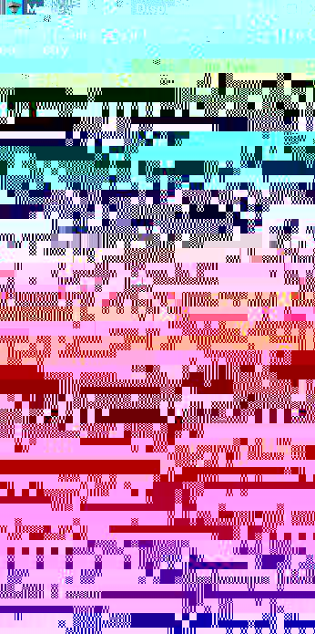
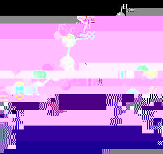

The STM codes are a suite of application codes and AVS modules
to display both geometric structure and electronic properties.
Electronic and geometrical structural information is obtained
from either Density Functional Theory (DFT) or Schrödinger
Theory, using a variety of computational or experimental
approaches. For more information see the original
paper presented at the AVS97 User
meeting.
Geometric structures are read from data files which contain either
experimental or computed structure information. The STM codes can
read structural information from:
- Plain XYZ Coordinates called
PlainCoord. Atom types specified by numerical entry in
periodic table.
- XYZ Coordinates called
coord. Atom types specified by atomic name as a
character string.
- Gaussian© Cube
Files called Cube.
- Brookhaven Protein Data Bank
called pdb.
- GAMESS Coordinates via a
PERL script called PGamess.
- GAMESS Plotting Option
called Gamess Cube.
- MSI DCAR called Dcar.
- DMOL XYZ called DMOL_XYZ.
- Mopac Electrostatic Potential
called Mopac ESP.
- Mopac coordinates called
Mopac XYZ.
- MOL2 called mol2.
- MOL called mol.
- CHEM3D called Chem3d.
- Molecular Mechanics Code MM3
called mm3.
The geometric structure reader is called mol_c
. The User
Interface for this module is in two parts:
|

|
INPUT - The parameters that controls how the data is read.
- Pause the display. This pauses the module from
processing and allows the user to set the input correctly
(Select File Type and Units).
- Select the type of file to read.
- Select a value for the type of units.
Note that for some displays
the default atom-atom bond or hydrogen-atom bond values
are not correct. Sliders Set Bond Scale Factor
and Set Hydrogen Bond Scale Factor allow for scaling
the display.
- Select a file to read.
- Uncheck the Pause.
Note, when initially starting the
application, you may also have to press the start button.
This is due to how AVS/Express will save the application.
OUTPUT
- Select the type of display.
The display options are:
- Select to show or hide the hydrogen atoms.
- The Set Sphere Size type-in allows the user to
scale the size of the atom spheres.
- ball and stick display spheres connected by single
lines. The bonds are determined by two atoms being close
(within a cutoff) specified in the module. The atoms are
colored by type.
- cpk also known as space-filling model. The radii
of the atoms are the van der Waals radii also specified
in the module.
- colored stick is also just the bond structure
colored by atom type.
- colored residue is a residue based display, and
each residue is colored differently.
|
A partial list of the atom type colors.
Atom Type
|
Color
|
| Hydrogen |
White |
| Carbon |
Green |
| Oxygen |
Red |
| Sulfur |
Yellow |
| Nitrogen |
Blue |
| Heavy Atoms |
Gray or purple |
An example network using mol_c is shown below.
The main connection for mol_c is to the
SingleWindowApp UViewer3D module.



The STM AVS Express modules will read data from either the Gaussian
Cube Option or a plot file from GAMESS. Electron densities are obtained
from Density Functional Theory (DFT) via the Kohn-Sham (KS) orbital-density
equations or from wave function functional via the Schrödinger equation.
- Input of the data into AVS Express is accomplished using
different input data readers which were specifically designed to
read data from Gamess
or Gaussian CUBE files
- Combining these modules with the reader
mol_c
and AVS Express built-in functions, additional molecular
properties can be computed and displayed.
- Mapping these properties onto an isodensity surface, which
is overlayed onto the geometric structure shows how the
electronic properties relate to chemical activity.
Gaussian Cube Reader
The Gaussian Cube Reader module reads the Gaussian Cube file output.
The cube output in the example below is denoted (commonly) with a
.grd for the density, HOMO and ESP
properties, respectively.
The module is used in the following example network:
To give the following display:
GAMESS output
The GAMESS Plot file readermodule reads the .F33
file output from GAMESS. The file can have any extension.
The module is used in the following example network:
To give the following display: